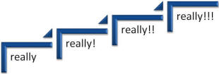
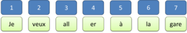
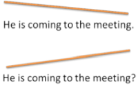

Intonation

 |
Intonation is a complex area so this guide will only cover the most important aspects. At the end of the guide there is a list of suggestions for further reading.
 |
What is intonation? |
A simple definition is that it refers to variations in spoken pitch
or tone and stress or emphasis.
Intonation is often used to show the attitude of the speaker and signal such
things as:
- The difference between statements and questions. Some languages use only intonation to do this, having no grammatical difference between an affirmative and an interrogative sentence.
- The difference between various types of question such as those expecting a yes/no answer (closed questions) and those requiring elaboration such as questions beginning with why, who, what etc.
- The speaker's focus of attention on various bits of the message.
For example, if somebody asks you a simple yes/no question such as:
Are you
coming to the party?
how many ways can you vary the intonation on a
simple 'yes' answer?
Look at the graphic above for some clues and
try to express the following attitudes:
- No emotional response
- Positive confirmation
- Why do you ask?
- Of course! I'm astonished you should ask!
- I'm not sure if I'm coming or not. It depends.
- Carry on and tell me why you are asking.
Click here when you have done that.
Here are the possibilities usually recognised, numbered as the 6 responses above:
| 1 |
|
neutral tone showing little emotion; it may sound rude or uninterested |
| 2 |
|
falling tone showing a positive response: That's right. |
| 3 |
|
rising tone indicating slight surprise or a query: Why do you ask? |
| 4 |
|
sharply rising tone indicating astonishment that someone should ask |
| 5 |
|
rising tone followed by falling tone
indicating doubt: I may come Doubt is often expressed through the use of modal auxiliary verbs and a rising tone on the verb followed by a fall is frequent. |
| 6 |
|
falling tone followed by rising tone
indicating something like: Carry on. I'm interested to
know why you ask. This pattern may also indicate a warning in something like Careful |
 |
Now try this short test doing the same with the word Hello to see if you can match intonation pattern to speaker attitude. Imagine you are answering the door or a telephone call. |
If you got that mostly right, we can move on. If you didn't, refresh this page and have another look.
 |
Other languages |
Intonation is a significant contributor to a foreign accent in
learners of other languages because most adult learners will carry
over the intonation patterns from their first languages into a
language they are learning.
It is important to note here that intonation patterns, at least the
conventional or canonical ones, will vary from language to language
and cannot easily be transferred although, of course, some languages
will share very similar patterns and that will make life somewhat
easier for learners with those backgrounds.
It is also the case that intonation patterns will vary from dialect
to dialect in most large languages and that, too, is a significant
marker of the speaker's origin.
In French, for example, pitch rises towards the end of each clause
and at the end of sentences which gives the language its
recognisable intonational contour rather like:
whereas German, by contrast, exhibits a fall at the end of each
cause and at the end of the sentence like this:
Italian speakers will tend to let the pitch fall on statements
requiring an exclamation mark but speakers of Greek will do the
opposite.
Question intonation is often, not always, signified by rising
intonation and some languages have no other way to identify question
forms at all.
In Mandarin Chinese, question and statement intonations follow
similar contours but the question intonation starts, continues and
finishes at a higher pitch level than a statement.
Russian speakers will increase pitch in alternative questions on
both the first and second alternative (whereas English, for
examples, lowers the pitch after the second alternative).
Within very large languages, such as Arabic, which is better
considered as a language family rather than a single language, there
are very significant differences between the intonation contours
used in, say, Morocco, from those used in other Arabic-speaking
cultures such as the Gulf States.
 |
Why is intonation important? |
Although this is undeniably a challenging area to teach, it is important for the simple reason that native speakers are accustomed to hearing English which contains errors in structure and the pronunciation of individual sounds (especially vowels) but may be wholly unaware that errors in intonation are even possible. Wells puts it this way:
After all, almost any intonation pattern is
possible in English; but different intonation patterns have
different meanings. The difficulty is that the pattern the learner
uses may not have the meaning he or she intends. Speakers
of English assume that – when it comes to intonation – you mean what you
say. This may not be the same as what you think you are saying.
(Wells, 2006: 2)
Key concepts in intonation |
Before we can analyse or attempt to teach intonation, there are four concepts to be understood. They are:
- Pitch
- Stress
- Rhythm
- Tone groups
and we will take them one at a time.
 |
Pitchthe quality of a sound produced by the rate of vibrations |
The physics
If you hit middle C on a piano, the sound you hear will be produced by a string vibrating 262 times a second. That's usually expressed as 262 cps (cycles per second) or Hz (Hertz). Making a piano do that is actually rather a complicated piece of engineering which relies on the fact that longer strings produce lower notes and thicker strings vibrate more slowly. If you cut the string in half, and hit it again, the note will be exactly twice as high.
Your larynx, where you keep your vocal folds, is considerable smaller than the average piano so the effect is achieved by muscles working to tighten or relax the cords across which you are expelling air, lengthening and thickening them or shortening and narrowing them. You may not be able to sing terribly well but you do have considerable control over the pitch of sounds that you produce.
The human ear can (in young people) detect sounds ranging from around 20 to 20,000 Hz and you can detect differences of pitch of around 2 or 3 Hz. (Bats and elephants are a different matter.) Given that the average range of human voice is around 160 Hz, that allows us to detect something like 65 variations.
Language pitch
We don't however, have 65 significant variations to
contend with. Authorities vary in this respect but the usual
consensus is that significant pitch variations are confined to
low, middle and high or sometimes as low,
middle, high and extra high.
To imagine how that sounds try saying the word really at the
four different pitches. This may help:

On the left, you should sound non-committal, the, moving to the right,
sound mildly surprised, very surprised and absolutely astonished
respectively. As you do so, your voice should start at a low pitch
and move middle and high to extra high.
You do not have to screech because the differences between the pitches
have only to be two or three hertz. You will, however, need,
probably, to increase the amount of energy you commit as you get to
higher pitches showing that pitch and stress are intimately connected.
 |
Stressgiving particular emphasis or importance to a sound |
Usually, stress is connected to loudness. If you hit a
piano key harder, it will produce a louder sound but one which has the
same pitch.
In humans, as usual, the situation is a bit more complicated and there
are two issues:
- If we make an extra effort to expel more air, we will certainly increase the loudness of the sound we produce. However, the extra effort we make usually results in our also tightening (and shortening) the vocal cords and that, of course, will produce a heightened pitch as well. This means that most stressed sounds are also at a higher pitch.
- At the same time, speakers usually also lengthen the sound when they wish to stress it.
This results in three variations, not one:
- Stressed sounds are louder
- Stressed sounds are longer
- Stressed sounds are at a higher pitch
Oddly, the evidence appears to be that loudness is not the deciding
factor in what the hearer perceives – duration and pitch are more
important.
Thankfully, most authorities concur that we only need to distinguish
between stressed and unstressed sounds although there is clearly a whole
range of intermediate possibilities with the three variables working
together.
 |
Rhythmthe flow of words and phrases determined by the relation of long and short or stressed and unstressed syllables |
Here is where we bump into a common division into syllable- and stress-timed languages. The argument (based on Abercrombie, 1965) is that some languages (such as French) are syllable timed with each syllable taking the same amount of time to be uttered. So we get:
In French:

in which all syllables take the same amount of time to utter and in
English:

in which each section (called a foot) has one stressed syllable and any
number of unstressed syllables, all of which take the same time to utter.
More recent work has somewhat refined the theory, placing languages on a cline from those which are strictly syllable timed to those which are strictly stress timed with gradations in between. It is now widely accepted that to refer to a stress-timed or syllable-timed language is only a crude approximation of the truth.
Regional differences are also apparent within languages so, for
example, Welsh speakers of English tend more towards syllable- than
stress-timed production and South American speakers of Portuguese
produce broadly more stress-timed language than European speakers of
the language.
For more on this, including some consideration or Mora-timed
languages, see the
guide to sentence stress (new tab).
 |
The tone groupDescriptions of intonation are not concerned with the pitch of individual syllables but rather with pitch patterns or tunes. The phonological unit set up to handle the structure of tunes is the tone group(Brazil, Coulthard & Johns, 1980:6) |
A common analogy used to describe tones is that they occur as ripples on the larger waves of intonation across the utterance.
The usual division of the tone group or unit is into four bits:
(Prehead) (Head) Nucleus (Tail)
The reason that three of those bits are in brackets is that they may
not always occur – the nucleus, however, is always present.
This is where things get complicated because there is less agreement
among authorities in the analysis.
- Nucleus
- This is the key bit to focus on. It is the syllable on
which the main pitch change starts. Some people call it the
tonic syllable.
Although authorities differ, it's possible to distinguish 4 types of pitch movement on the nucleus: fall, rise, rise-fall and fall-rise. Complicating the issue are the three or four pitch types recognised above (low, middle, high and extra high). Combine all those and it's clear that there are 12 possible variations to consider. The nucleus is followed by the ... - Tail
- This, when it is present, continues the pitch movement which occurred in the Nucleus. Some authorities don't even recognise its existence and combine it with the Nucleus or Tonic.
- Prehead and Head
- Together, these two constitute the syllables up to but not
including the Nuclear syllable. Some people don't even
recognise two categories here and use Pretonic to describe the whole
bit leading up to the Nucleus (or Tonic). Usually, the pitch
movement on this part of an utterance can be described in the same
way as the pitch movement on the nucleus (fall, rise, rise-fall and
fall-rise). The movement, is, however, smoother and less
emphatic.
There are those, Brazil et al, for example (1980:9), who suggest that the pitch movement on the Prehead and Head, while variable, is not actually significant. That's convenient for teaching purposes because it means we can virtually ignore it and focus our learners on the pitch movements occurring on the Nucleus or Tonic syllable.
To repeat the data given at the outset, with some examples, 6 possible pitch changes on the Nucleus are suggested. They are:
| 1 |
|
neutral tone showing little emotion; it
may sound rude or uninterested: |
The whole phrase is the tone group |
| 2 |
|
falling tone showing a positive
response: |
The fall occurs on right and that's the nucleus |
| 3 |
|
rising tone indicating slight surprise
or a query: |
The rise occurs on true and that's the nucleus |
| 4 |
|
sharply rising tone indicating
astonishment or shock: |
The sharp rise occurs on where and that's the nucleus |
| 5 |
|
rising tone followed by falling tone
indicating doubt: |
The head (I) is where the rise begins and the main movement in tone is on might (the nucleus) with a falling tone on the tail (do) |
| 6 |
|
falling tone followed by rising tone
indicating interest and desire for more: |
The head (ca) is where the
fall begins and the main movement in tone is on rry
(the nucleus) with a rising tone on the tail (on) As was noted above, this pattern may also indicate a warning. |
It bears repeating that we are exemplifying canonical (i.e.,
most usual and conventional) English intonation patterns here.
Languages vary significantly.
Prosodic features: word and sentence stress |
There are two key ideas here:
- Pitch or tone
This refers to the 'note' of the voice being high, low or somewhere in the middle. English uses tone as a component of intonation but other languages, called tonal languages, such as Mandarin or Thai, use tone to vary the meanings of words. The classic example is the Mandarin word ma. Spoken with a high tone, the word means mother, with a rising tone it means hemp, with a low fall-rise tone it means horse, and with a falling tone it means to scold. - Stress
This is a combination of loudness, duration and pitch or tone. Some languages make great use of stress to distinguish lexical meaning. For example, the Greek word πότε (with the stress on the first syllable [potay]) means when but the word ποτέ (with the stress on the second syllable [potay]) means never. English rarely does this but there is a distinction between, for example, envelope and envelope.
Usually, four types of stress in English are identified:- Tonic stress: in any unit of intonation,
the stress will always fall on a particular syllable but it will
vary, usually falling towards the end of the unit, so we get:
He's talking.
He's talking to my brother.
He's talking to my brother about football.
The original stresses don't disappear in the first two sentences but become less stressed comparatively. The assumed reason for this is that there is a clearly discernible tendency in English to place new information towards the end (or right) of an utterance. - Emphatic stress occurs when the speaker
wants to assign particular emphasis to a word or concept.
Often this focuses on a modal auxiliary verb or some kind of adverbial.
For example, compare:
It was really hot vs. It was really hot
He told me I must do it vs. He told me I must do it - Contrastive stress
is what we hear when the speaker wants to distinguish one
concept from another. So we get, e.g.
They arrived together (not left together)
vs.
They arrived together (not separately).
Contrastive stress is often called special stress. - New information stress often occurs in
questions, especially wh-questions, so we get a dialogue
something like:
Where did you go?
I went to the cinema.
What did you see?
I saw that soppy love story.
and so on. Each question and each answer focuses the stress on the new information. - Theme and rheme and stress
The conventional sentence stress and the highest pitch and largest pitch movement occurs conventionally in English on the last content word (not function word) of the rheme of a sentence so, for example in:
Because she wanted to meet his mother, she travelled up to London
the greatest pitch movement (a rise-fall) occurs on the final part of the rheme, London.
If we reverse the clauses, the pitch movement stays in the same place but, of course, it will now fall on mother because that is now the last content word in the rheme of the sentence. It looks like this:

So, reversing the clauses in a complex sentence like this involves making sure that the stress remains where it belongs. Raising one clause or the other to the theme position also has communicative implications, of course, because the natural follow-on statement from the first example will concern London and from the second example, it will concern her mother.
There is a little more on this in the guide to theme-rheme structures (new tab).
- Tonic stress: in any unit of intonation,
the stress will always fall on a particular syllable but it will
vary, usually falling towards the end of the unit, so we get:
 |
Transcribing intonation |
There are two ways generally in use:
- Using arrows such as ↑↓→ to show when the intonation changes and in which direction the pitch goes.
- Using contour lines such as
 to show the range across an utterance.
to show the range across an utterance.
Additionally, the use of bold type or underlining, or both, as above, is common practice. All these methods are used in this guide.
 |
The functions of intonation |
The following is drawn from a key text by Wells,2006. Wells has six essential functions (and we have added one). The examples are not from Wells.
- attitudinal function

- This is the kind of thing we started with. For example, if
you say Good afternoon with a flat intonation, falling
slightly at the end, you will
probably sound like you are starting a serious business meeting and
are keen to get on to the agenda. It requires no response.
If you say it with a rise-fall intonation, falling on noon, after rising on after, you will sound more positive and welcoming.
It looks like this:
Attitudinal function reflects the emotional state of the speaker and may show anger, shock, sarcasm, irony and so on. This is what is generally referred to as the tone of an utterance. - grammatical function

- We can make a question in English only by changing the
intonation pattern. So we can have:
 - A number of languages (such as Greek) rely solely on intonation
to make a question in spoken language.
Many would also claim that a question requiring a yes/no answer will have rising intonation along the sentence. So, for example
Are you coming to the meeting?
will rise on the word meeting to indicate that the speaker needs a yes/no response.
However, on a wh-question requiring more information from the listener, such as
What time's the meeting?
the intonation falls on the final word. The effect is something like:

We also use tone to distinguish phrase constituents rather in the way that we use punctuation in written language. So, for example:
I spoke to the man behind the bar
can have two meanings depending on where the pause and tone changes occur.
If we have, e.g.:
I spoke to the man ↓ [pause] behind the bar
we are stating that behind the bar is where I spoke to him but if we have:
I spoke to the man behind the bar ↑
with no pauses, then we are identifying the man by where he was.
Disambiguating which meaning is intended by pausing and tone shifts are what Wells refers to as the demarcative function of intonation.
This also occurs with relative pronoun clauses in English so the distinction between:
The cats which were adopted by the old lady lived happily for many years
and
The cats, which were adopted by the old lady, lived happily for many years
can be made by a falling tone and slight pause to signify the commas used in written texts. The tone or pitch used on the non-defining relative clause will also often fall and the clause will be more quickly spoken than the rest of the sentence, signalling the fact that this is purely omissible and extra information rather than constituting part of the subject of the main verb.
This is also a discourse function and discussed again below. - focusing

- This occurs when the speaker wants to signal what is new and
what is shared information. For example, if we put a falling
tone on the word pen in
There's a ↓pen on the table
we are answering the question
What's on the table?
but if we let the tone fall on table as in
There's a pen on the table↓
we are answering the question
Have you got something to write with? (or something similar).
It might look like this:

This is a form of markedness in some analyses and there is a guide to markedness on this site.
They important point is that we use tone to background some information and mark other information for emphasis, newness or importance. Wells refers to this as a pragmatic function of intonation and states that it is perhaps the function most readily taught in the EFL classroom. (op cit:11) - discourse function

- We use intonation to show how ideas are connected.
Subordinate clauses, for example, have lower pitch and are spoken
more quickly than the main clause. So we can get:
- Another example, often asserted, is that intonation allows the
hearer to distinguish between defining and non-defining pronoun relative
clauses. So we get:

- signalling the commas in the second example by dropping the tone
and speaking more quickly. See
the
guide to relative pronoun clauses if this distinction is unclear to you.
The discourse function also plays a central role in turn-taking cues in interactions. For more, see the guide to turn-taking. - disambiguation function
- This is an area allied to the last and is the one we have added.
We saw there that intonation, particularly with regard to where the nucleus of tone units occurs and what constitutes a separate tone unit is one way in which a defining relative clause can be distinguished from a non-defining one. Otherwise, both would sound the same and it would lead to ambiguity in the mind of the hearer.
Here are some more examples of the way that intonation can disambiguate what are otherwise indistinguishable ideas:- I washed the car in the
corner
In this written sentence it is not possible to determine whether the car in question was the one in the corner or was washed there. In spoken English, however, we can, if we are careful, express and detect the difference:
We can phrase the sentence in two ways:
Phrasing the clause in the first way determines that it is the car which was in the corner. Phrasing it the second way signals that the washing happened in the corner.1 I washed the CAR in the corner pre-head head nucleus tail 2 I washed the car in the CORNER pre-head head nucleus - - I didn't go to the party because she might be there
is another ambiguous statement when it is written and means either:
I did not go to party at all and the reason for that was that she might be there
I went to the party but not because she might be there
Again, we can make the meaning clear by inserting a nuclear stress on the right element:
In version 1, the meaning is that the speaker did not go for fear of meeting her.1 I didn't go to the party because SHE might be there pre-head head nucleus tail 2 I didn't go to the party BECAUSE she might be there pre-head head nucleus -
In version 2, the meaning is that the speaker went for a reason other than meeting her. - He didn't think the money had been stolen
Here we have a rather unusual case because most people reading this would assume only one interpretation:
His opinion was that the money had not been stolen.
However, we can phrase and stress the sentence in two ways:
and in the first case, we will not be surprised in the speaker went on with:1 - He didn't THINK the money had been stolen pre-head head nucleus tail 2 He didn't think the money had been STOLEN pre-head head nucleus -
He KNEW it had.
One reason for the ambiguity is the tendency in English to transfer the negation from the logical place (the second clause) to the first clause.
In most other languages, the thought would be expressed as:
He thought the money hadn't been stolen
in which there is no ambiguity.
- I washed the car in the
corner
- psychological function

- This refers to how we perceive sense units in utterances.
In lists, for example, we use something like
I bought some ↑butter, some ↑jam, a loaf of ↑bread and a pint of ↓milk.
Here's another example of how pausing and the accompanying intonation is affected by the speaker's perception of sense units. Compare:- The people who under↓stood [PAUSE] quickly grasped the argument.
- The people who understood ↓quickly [PAUSE] grasped the argument.
In sentence 2., we know that people understood, too, but only the ones who quickly understood grasped the point.
The issue is to do with phrase constituents, to which there is a guide on this site. In sentence 1., we have the verb phrase understood quickly and in sentence 2., the verb phrase is quickly grasped.
Strictly speaking, verb phrases consist only of verb forms rather than verbs plus adverbials but that does not matter for the purposes of this because adverbs are often embedded in verb phrases and the whole becomes a single sense unit.
Of course, the second sentence can be disambiguated in writing and speech by moving the adverb so we can have:- The people who quickly understood grasped the argument.
- The people who understood grasped the argument quickly.
284↑-695↑-677↑-899↓
to make it possible (or at least easier) to remember. - indexical function

- This refers to intonation acting as a marker of personal or social identity. For example, newspaper sellers use a particular intonation pattern, as do newsreaders and people delivering lectures or sermons. It has also been argued that the high-rise terminal, where all statements sound like questions with a rise at the end, is typical of certain social and age groups in Britain. It has even been suggested that the tendency is caused by exposure to Australian television soap operas in which the pattern is common.
 |
Warning! |
Do note imagine, however, that our reactions and attitudes are signalled
only by the intonation we use. Far from it. If you or your
materials imply anything of the sort, your students will be seriously
misled.
This is what was said in the guide to key features of intonation and it
bears repeating here:
There are no arguments for teaching
intonation in terms of attitude, because the rules for use are too
obscure, too amorphous, and too easily refutable.
(Brazil, Coulthard & Johns, 1980:120)
Intonation does play a communicative role, of course, but in conjunction with the setting, the roles of speaker and listener, their intentions and their shared information in the setting.
 |
Intonation and communication |
The communicative importance of all this is:
- where the speaker decides to place the Nucleus in an utterance and
- which of the 6 pitch changes is used
For example, consider the utterance:
She's going to see that film
Say this sentence aloud, doing three things:
- moving the Nucleus around from item to item along the utterance. In other words, making the tone shift occur on each element of the sentence in turn.
- raising the pitch of the Nucleus
- changing the pitch movement in one of the four ways: fall, rise, rise-fall, fall-rise
and you'll soon hear the differences.
For example:
- Place the Nucleus on the first syllable (She's) and use a sharply rising pitch movement. You'll get a sentence which sounds like an astonished question asking for the hearer to confirm its truth.
- Try again with the Nucleus on go: and a rise-fall, you'll get a sentence that sounds as if the speaker is confirming her fixed resolution to see the film.
Try doing those two and then writing down the way you see the intonation using arrows to show pitch movements and writing bits of the utterance above or below a base line to show pitch and then click here for a picture of how it might look.

Try a few more of these for yourself and identify how the sentence will sound to a listener.
This is the kind of thing which can be
presented and practised but do not imagine, however, that our reactions
and attitudes are signalled only by the intonation we use. Far
from it. If you or your materials imply anything of the sort, your
students will be seriously misled. For example, the intonation in
the first diagram above could just as easily show extreme anger as
astonishment.
The point is:
There are no arguments for teaching
intonation in terms of attitude, because the rules for use are too
obscure, too amorphous, and too easily refutable.
Brazil, Coulthard & Johns, 1980:120
Intonation does play a communicative role, of course, but in conjunction with the setting, the roles of speaker and listener, their intentions and their shared information in the setting.
|
|
Now you can try a short test of the key concepts. |
A note on punctuation
The written form of intonation is punctuation although the resources available are much more limited. Marks such as '!', '?' and even '??!!' as well as the use of dashes, commas, italics, bold type, UPPER-CASE LETTERS and full stops are all devices which can be used to represent spoken intonation. They don't only do that, of course, as they are also involved in reducing ambiguity and making text coherent as well as cohesive.
|
|
There's a summary test. |
| This is the index of other guides in the in-service pronunciation section. | ||
| the overview of pronunciation | connected speech | consonants |
| intonation | minimal pairs (PDF) | minimal pairs transcription test |
| sentence stress | syllables and phonotactics | teach yourself transcription |
| teaching pronunciation IP | teaching troublesome sounds | verb and noun inflexions IP |
| vowels | word stress | identifying word-stress IP |
| Guides marked IP are in the initial plus section. | ||
References:
You may find some of the following helpful in this rather technical
area.
Abercrombie. D, 1965, Studies in Phonetics and Linguistics,
London, Oxford University Press
Brazil, D, 1975,
Discourse Intonation, Birmingham: University
of Birmingham: English Language Research
Brazil, D, Coulthard, RM and Johns, C, 1980, Discourse
Intonation and Language Teaching, Harlow: Longman
Celce-Murcia, M, Brinton D and Goodwin J, 1996, Teaching
Pronunciation, Cambridge: Cambridge University Press
Crystal, D, 1969, Prosodic Systems and Intonation in English,
Cambridge: Cambridge University Press
Wells, JC, 2006, English Intonation: An Introduction, Cambridge: Cambridge
University Press